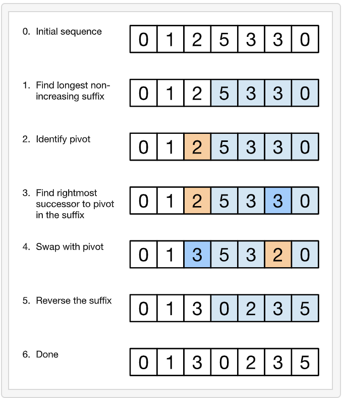

SDE Sheet
Leetcode 31: Next Permutation
- Find the largest index k such that nums[k] < nums[k + 1]. If no such index exists, just reverse nums and done.
- Find the largest index l > k such that nums[k] < nums[l].
- Swap nums[k] and nums[l].
- Reverse the sub-array nums[k + 1:].

class Solution {
public:
void nextPermutation(vector<int>& nums) {
int n = nums.size(), k, l;
for (k = n - 2; k >= 0; k--) {
if (nums[k] < nums[k + 1]) {
break;
}
}
if (k < 0) {
reverse(nums.begin(), nums.end());
} else {
for (l = n - 1; l > k; l--) {
if (nums[l] > nums[k]) {
break;
}
}
swap(nums[k], nums[l]);
reverse(nums.begin() + k + 1, nums.end());
}
}
};
Maximum Sum Subarray (Kadane's Algorithm)
Initialize: max_so_far = INT_MIN max_ending_here = 0
Loop for each element of the array
(a) max_ending_here = max_ending_here + a[i]
(b) if(max_so_far < max_ending_here)
max_so_far = max_ending_here
(c) if(max_ending_here < 0)
max_ending_here = 0
return max_so_far
int maxSubArraySum(int a[], int size)
{
int max_so_far = INT_MIN, max_ending_here = 0;
for (int i = 0; i < size; i++)
{
max_ending_here = max_ending_here + a[i];
if (max_so_far < max_ending_here)
max_so_far = max_ending_here;
if (max_ending_here < 0)
max_ending_here = 0;
}
return max_so_far;
}
Sort Colors 0, 1, 2: Dutch national flag algo (Similar to quick sort)
The solution requires the use of tracking 3 positions, the Low, Mid and High.
We assume that the mid is the "Unknown" area that we must evaluate.
If we encounter a 0, we know that it will be on the low end of the array, and if we encounter a 2, we know it will be on the high end of the array.
To achieve this in one pass without preprocessing (counting), we simply traverse the unknown will generating the low and high ends.
Take this example:
Assume our input is: 1 0 2 2 1 0 (short for simplicity).
Running the algorithm by hand would look something like:
1 0 2 2 1 0
^ ^
L H
M
Mid != 0 || 2
Mid++
1 0 2 2 1 0
^ ^ ^
L M H
Mid == 0
Swap Low and Mid
Mid++
Low++
0 1 2 2 1 0
^ ^ ^
L M H
Mid == 2
Swap High and Mid
High--
0 1 0 2 1 2
^ ^ ^
L M H
Mid == 0
Swap Low and Mid
Mid++
Low++
0 0 1 2 1 2
^ ^ ^
L M H
Mid == 2
Swap High and Mid
High--
0 0 1 1 2 2
^ ^
L M
H
Mid <= High is our exit case
class Solution {
public:
void sortColors(vector<int>& nums)
{
int tmp = 0, low = 0, mid = 0, high = nums.size() - 1;
while(mid <= high)
{
if(nums[mid] == 0)
{
tmp = nums[low];
nums[low] = nums[mid];
nums[mid] = tmp;
low++;
mid++;
}
else if(nums[mid] == 1)
{
mid++;
}
else if(nums[mid] == 2)
{
tmp = nums[high];
nums[high] = nums[mid];
nums[mid] = tmp;
high--;
}
}
}
};
Stock Buy and Sell
Case 1: Only 1 transaction 121. Best Time to Buy and Sell Stock
Approach 1:
Convert given stock prices array to price change array. Now this is nothing but a maximum sum contiguous subarray problem.
Approach 2:
we keep track the lowest price and once the price exceeds the old lowest price, we record the difference.
var maxProfit = function(prices) {
const size = prices.length;
let lowPrice = prices[0];
let profit = 0;
for(let i = 1; i < size; i++) {
if(prices[i] < lowPrice) {
lowPrice = prices[i];
} else {
profit = Math.max(prices[i] - lowPrice, profit);
}
}
return profit;
};
Case 2: Multiple transaction 122. Best Time to Buy and Sell Stock II
Everyday transact if profit for that day is >0.
int maxProfit(vector<int> &prices) {
int ret = 0;
for (size_t p = 1; p < prices.size(); ++p)
ret += max(prices[p] - prices[p - 1], 0);
return ret;
}
Case 3: Maximum 2 transactions 123. Best Time to Buy and Sell Stock III
Here, the oneBuy keeps track of the lowest price, and oneBuyOneSell keeps track of the biggest profit we could get. Then the tricky part comes, how to handle the twoBuy?
Suppose in real life, you have bought and sold a stock and made 100 dollar profit. When you want to purchase a stock which costs you 300 dollars, how would you think this? You must think, um, I have made 100 profit, so I think this 300 dollar stock is worth 200 FOR ME since I have hold 100 for free. There we go, you got the idea how we calculate twoBuy!! We just minimize the cost again!! The twoBuyTwoSell is just making as much profit as possible. Hope this explanation helps other people to understand this!
int maxProfit(vector<int> prices) {
int oneBuyOneSell = 0;
int twoBuyTwoSell = 0;
int oneBuy = INT_MAX;
int twoBuy = INT_MAX;
for(let i = 0; i < prices.length(); i++) {
int p = prices[i];
oneBuy = min(oneBuy, p);
oneBuyOneSell = max(oneBuyOneSell, p - oneBuy);
twoBuy = min(twoBuy, p - oneBuyOneSell);
twoBuyTwoSell = max(twoBuyTwoSell, p - twoBuy);
}
return twoBuyTwoSell;
};
Case 4: Maximum K transations (DP)
- Best Time to Buy and Sell Stock IV
If K<n/2 then use case 2 as you can buy and sell everyday
For K>= n/2,
There are 2 options. Get max profit (profit[k][day]) of following 2 options:
-
Don't transact(sell) on Day d => profit[k][day-1]
-
Transact on Day d => price[d] - price[i] + profit[k-1][i] where i=0..d-1
price[d] - price[i] = Profit from i-d transaction
https://www.youtube.com/watch?v=oDhu5uGq_ic
Time : O(n^2k)
Space : O(nk)
int maxProfitWithKTransactions(vector<int> prices, int k) {
if(prices.size()==0 or k==0) return 0;
vector<vector<int>> profits(k+1, vector<int>(prices.size(),0)); // DP table
for(int t=1; t<=k; t++) {
for(int d=1; d<prices.size(); d++) {
int maxi=0;
for(int i=d-1; i>=0; i--) {
maxi = max(maxi, (prices[d]-prices[i] + profits[t-1][i]) );
}
profits[t][d] = max(profits[t][d-1], maxi);
}
}
return profits[k][prices.size()-1];
}
Time : O(nk)
Space : O(nk)
int maxProfitWithKTransactions(vector<int> prices, int k) {
if(prices.size()==0 or k==0) return 0;
vector<vector<int>> profits(k+1, vector<int>(prices.size(),0)); // DP table
for(int t=1; t<=k; t++) {
int maxSoFar = INT_MIN;
for(int d=1; d<prices.size(); d++) {
maxSoFar = max(maxSoFar, profits[t-1][d-1] - prices[d-1]);
profits[t][d] = max(profits[t][d-1], maxSoFar+prices[d]);
}
}
return profits[k][prices.size()-1];
}
Leetcode 56: Merge Intervals
vector<Interval> merge(vector<Interval>& ins) {
if (ins.empty()) return vector<Interval>{};
vector<Interval> res;
sort(ins.begin(), ins.end(), [](Interval a, Interval b){return a.start < b.start;});
res.push_back(ins[0]);
for (int i = 1; i < ins.size(); i++) {
if (res.back().end < ins[i].start) res.push_back(ins[i]);
else
res.back().end = max(res.back().end, ins[i].end);
}
return res;
}
Similar questions: 252 Meeting Rooms 253 Meeting Rooms II 435 Non-overlapping Intervals
Leetcode 88: Merge Sorted Array without extra space
E.g:
Input: nums1 = [1,2,3,0,0,0], m = 3, nums2 = [2,5,6], n = 3
Output: [1,2,2,3,5,6]
class Solution {
public:
void merge(vector<int>& nums1, int m, vector<int>& nums2, int n) {
int i = m - 1, j = n - 1, tar = m + n - 1;
while (j >= 0) {
nums1[tar--] = i >= 0 && nums1[i] > nums2[j] ? nums1[i--] : nums2[j--];
}
}
};
Leetcode 287: Find the Duplicate Number
Given an array of integers nums containing n + 1 integers where each integer is in the range [1, n] inclusive.
There is only one repeated number in nums, return this repeated number.
Input: nums = [1,3,4,2,2]
Output: 2
Approach 1: Sort and iterate through the vector.
Approach 2: Keep frequency map where you maintain which number has already occurred. Time = O(N) Space = O(N)
Approach 3:
Given problem is converted to linked list using array index and value. This is possible because input is in range [1,n] E.g.: Given example input converted to linked list: 0->1->3->2->4->2
Use two pointers the fast and the slow. The fast one goes forward two steps each time, while the slow one goes only step each time. They must meet the same item when slow==fast. In fact, they meet in a circle, the duplicate number must be the entry point of the circle when visiting the array from nums[0]. Next we just need to find the entry point. We use a point(we can use the fast one before) to visit form begining with one step each time, do the same job to slow. When fast==slow, they meet at the entry point of the circle.
Time = O(N) Space = O(1)
int findDuplicate3(vector<int>& nums)
{
if (nums.size() > 1)
{
int slow = nums[0];
int fast = nums[nums[0]];
while (slow != fast)
{
slow = nums[slow];
fast = nums[nums[fast]];
}
fast = 0;
while (fast != slow)
{
fast = nums[fast];
slow = nums[slow];
}
return slow;
}
return -1;
}
Leetcode 493. Reverse Pairs
//My written code
class Solution {
public:
int count=0;
void merge(vector<int>& nums, int left, int mid, int right) {
vector<int> tmp;
int i=left;
int j=mid+1;
for(; i<=mid; i++) {
while(j<=right && nums[i]>(long)2*nums[j]) {
j++;
}
count += j-mid-1;
}
//For code simplicity you can directly sort using std::sort(nums.begin()+left, nums.end()+right)
//Merging
int p=left;
int q=mid+1;
while(p<=mid && q<=right) {
if(nums[p]<nums[q]){
tmp.push_back(nums[p]);
p++;
} else {
tmp.push_back(nums[q]);
q++;
}
}
//Remaining Elements
while(p<=mid) {
tmp.push_back(nums[p]);
p++;
}
while(q<=right) {
tmp.push_back(nums[q]);
q++;
}
for(int r=left; r<=right; r++) {
nums[r] = tmp[r-left];
}
}
void mergeSort(vector<int>& nums, int left, int right) {
if(left < right) {
int mid = (right+left)/2;
mergeSort(nums, left, mid);
mergeSort(nums, mid+1, right);
merge(nums, left, mid, right);
}
}
int reversePairs(vector<int>& nums) {
mergeSort(nums, 0, nums.size()-1);
return count;
}
};
Leetcode 169: Majority Element
Boyer Moore Voting Algorithm: This algorithm works on the fact that if an element occurs more than N/2 times, it means that the remaining elements other than this would definitely be less than N/2. So let us check the proceeding of the algorithm.
First, choose a candidate from the given set of elements if it is the same as the candidate element, increase the votes. Otherwise, decrease the votes if votes become 0, select another new element as the new candidate.
Leetcode Nice Explanation with Pictures
class Solution {
public:
int majorityElement(vector<int>& nums) {
int count = 0;
int candidate = 0;
for (int num : nums) {
if (count == 0) {
candidate = num;
}
if(num==candidate) count += 1;
else count -= 1;
}
return candidate;
}
};
Leetcode 229: Majority Element II (N/3)
This is similar to N/2
class Solution {
public:
vector<int> majorityElement(vector<int>& nums) {
int sz = nums.size();
int num1 = -1, num2 = -1, count1 = 0, count2 = 0, i;
for (i = 0; i < sz; i++)
{
if (nums[i] == num1)
count1++;
else if (nums[i] == num2)
count2++;
else if (count1 == 0)
{
num1 = nums[i];
count1 = 1;
}
else if (count2 == 0)
{
num2 = nums[i];
count2 = 1;
}
else
{
count1--;
count2--;
}
}
vector<int> ans;
count1 = count2 = 0;
for (i = 0; i < sz; i++)
{
if (nums[i] == num1)
count1++;
else if (nums[i] == num2)
count2++;
}
if (count1 > sz/3)
ans.push_back(num1);
if (count2 > sz/3)
ans.push_back(num2);
return ans;
}
};
Leetcode 128: Longest Consecutive Sequence
Store given array in hashset or hashmap.
Solution 1 : check consecutive elements lesser,greater than current element and delete them if present. Update max len.
Solution 2 : check current element - 1 in hashset, if present then ignore current. Start counting consecutive only when curr-1 is not present.
class Solution {
public:
int longestConsecutive(vector<int>& nums) {
unordered_set<int> hashset(nums.begin(), nums.end());
int maxlen = 0;
for(int n : nums) {
if(hashset.find(n) != hashset.end())
{
int prev = n-1;
int next = n+1;
while(hashset.find(prev) != hashset.end()) hashset.erase(prev--);
while(hashset.find(next) != hashset.end()) hashset.erase(next++);
maxlen = max(maxlen, next-prev-1);
}
}
return maxlen;
}
};
class Solution {
public:
int longestConsecutive(vector<int>& nums) {
set<int> hashSet;
for (int num : nums) {
hashSet.insert(num);
}
int longestStreak = 0;
for (int num : nums) {
if (!hashSet.count(num-1)) {
int currentNum = num;
int currentStreak = 1;
while (hashSet.count(currentNum+1)) {
currentNum += 1;
currentStreak += 1;
}
longestStreak = max(longestStreak, currentStreak);
}
}
return longestStreak;
}
};
Length of largest subarray with 0 sum
Given an array having both positive and negative integers. The task is to compute the length of the largest subarray with sum 0.
Idea is to create a prefix sum array and run loop over prefix sum array and keep updating prefix sum in map. Don't update if already present.
int maxLen(int A[], int n)
{
unordered_map<int,int> mpp;
int maxi = 0;
int sum = 0;
for(int i = 0;i<n;i++) {
sum += A[i];
if(sum == 0) {
maxi = i + 1;
}
else {
if(mpp.find(sum) != mpp.end()) {
maxi = max(maxi, i - mpp[sum]);
}
else {
mpp[sum] = i;
}
}
}
return maxi;
}
Leetcode 3: Longest Substring without repeat
Similar to sliding window while maintaining set of characters present in window.
class Solution {
public:
int lengthOfLongestSubstring(string s) {
int left = 0, right = 0;
set<char> st;
int n = s.size();
int len = 0;
while(right < n) {
if(st.find(s[right]) != st.end()) {
st.erase(s[left]);
left++;
} else {
st.insert(s[right]);
len = max(len, right - left + 1);
right++;
}
}
return len;
}
};
Leetcode 496. Next Greater Element I
//self written
//Storing value on stack and iterating from end (Simple)
class Solution {
public:
vector<int> nextGreaterElement(vector<int>& nums1, vector<int>& nums2) {
stack<int> st;
map<int,int> hash;
for(int i=nums2.size()-1; i>=0; i--) {
while(!st.empty() && st.top()<nums2[i]) {
st.pop();
}
if(st.empty()) {
hash[nums2[i]] = -1;
} else {
hash[nums2[i]] = st.top();
}
st.push(nums2[i]);
}
vector<int> res;
for(auto i:nums1){
res.push_back(hash[i]);
}
return res;
}
};
//Storing value on stack, iterating from start
class Solution {
public:
vector<int> nextGreaterElement(vector<int>& findNums, vector<int>& nums) {
stack<int> st;
unordered_map<int, int> hash;
for (int n : nums) {
while (st.size() && st.top() < n) {
hash[st.top()] = n;
st.pop();
}
st.push(n);
}
vector<int> ans;
for (int n : findNums) ans.push_back(hash.count(n) ? hash[n] : -1);
return ans;
}
};
Leetcode 503. Next Greater Element II
Simple but difficult to find.
//Storing index on stack and iterating from start
vector<int> nextGreaterElements(vector<int>& A) {
int n = A.size();
vector<int> stack, res(n, -1);
for (int i = 0; i < n * 2; ++i) {
while (stack.size() && A[stack.back()] < A[i % n]) {
res[stack.back()] = A[i % n];
stack.pop_back();
}
stack.push_back(i % n);
}
return res;
}
Leetcode 26. Remove Duplicates from Sorted Array
class Solution {
public:
int removeDuplicates(vector<int>& nums) {
int j=0;
for(int i=1; i<nums.size(); i++) {
if(nums[i] != nums[i-1]) {
j++;
nums[j] = nums[i];
}
}
return j+1;
}
};
Leetcode 42. Trapping Rain Water
//Simple solution
class Solution {
public:
int trap(vector<int>& height) {
vector<int> st(height.size());
int maxi=0;
for(int i=height.size()-1; i>=0; i--) {
maxi = max(height[i],maxi);
st[i] = maxi;
}
vector<int> fin(height.size());
maxi=0;
for(int i=0; i<height.size(); i++) {
maxi = max(height[i],maxi);
fin[i] = maxi;
}
int ans=0;
for(int i=1; i<height.size()-1; i++) {
ans += min(st[i],fin[i]) - height[i];
}
return ans;
}
};
//Efficient 2 pointers approach (Very difficult to understand)
3 1 2 4 0 1 3 2
3 3 3 4 4 4 4 4 - rmax
4 4 4 4 3 3 3 2 - lmax
/*
We keep modifying pointers(left/right) until we find current max(right)
If arr[left] <= arr[right], this means that arr[right] is the max value found so far on right.
This also means that maxLeft will be less than or equal to arr[right], which means that maxLeft will be bounding the addition to the answer(res variable, in this solution), since it has be less than or equal to arr[right] e, so we dont have to consider maxRight when adding to the counter.
If arr[left] > arr[right] , this means at arr[left] is the max value found so far on left. Same thing applies as explained in the paragraph above.
*/
class Solution {
public:
int trap(int A[], int n) {
int left=0; int right=n-1;
int res=0;
int maxleft=0, maxright=0;
while(left<=right){
if(A[left]<=A[right]){
if(A[left]>=maxleft) maxleft=A[left];
else res+=maxleft-A[left];
left++;
}
else{
if(A[right]>=maxright) maxright= A[right];
else res+=maxright-A[right];
right--;
}
}
return res;
}
};